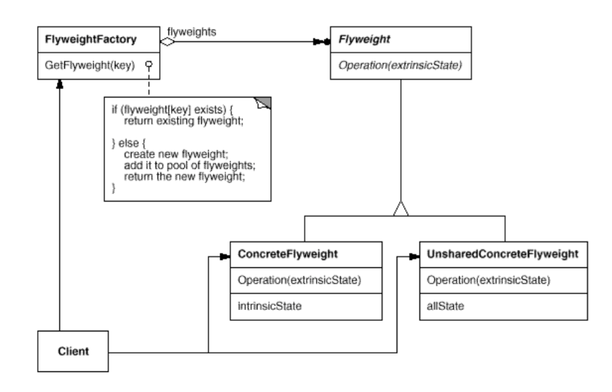

Flyweight Pattern
메모리 사용량을 줄이기 위해 외부 상태(예를 들어 상태 정보를 컨테이너에 저장 혹은 접근 시 계산)를 사용하거나 공유(객체의 복사본 대신 단일 객체에 대한 다중 참조를 이용)한다.
구성
- Flyweight
- 외부 상태를 사용하는 메시지에 대한 인터페이스를 정의한다.
- Concrete Flyweight
- 상태 정보를 계산하거나 정보를 외부 소스로부터 얻어오는(외부상태) 메소드를 지닌 Flyweight를 구현한다.
- Unshared Concrete Flyweight
- 이곳에서는 사용하지 않았지만, 만약 사용한다면 외부 상태 대신 내부 상태 변수를 사용하여 Flyweight를 구현한다.
- Flyweight Factory
- Flyweight를 생성하고 관리한다. Concrete Flyweight가 존재한다면 이를 제공하고, 없다면 생성한다.
- Client
- Flyweight의 참조를 유지하고, Flyweight의 외부상태를 계산한거나 저장한다.
구조

장단점
- 어떤 프로그램은 Flyweight를 사용하지 않으면 객체 지향적으로 구현할 수 없다.
- Flyweight 풀을 이용하면 자바의 '==' 연산자를 사용하여 객체의 동일성 여부를 결정할 수 있다.
- 만약 외부 상태가 컨테이너에 저장된다면 객체를 컨테이너를 통해 접근해야 한다. 그리고 외부 상태가 계산되는 값(예를 들어 특정 속성이 사용될 때마다 데이터베이스에 접속한다)이라면 접근이 느릴 수 있다.
- Flyweight는 코드를 복잡하게 만들며 유지 보수를 어렵게 하고 코드의 전체크기를 불어나게 한다.
예제
예제 코드 보기